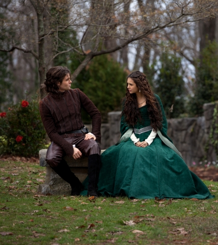

EPISÓDIO 19 – KLAUS

KLAUS É REVELADO - Stefan e Damon ficam furiosos quando descobrem
que Elena tem desafiado os dois para fazer um novo aliado e ter
controle do plano para manobrar Klaus. Desintendimentos sobre
como proteger Elena deixa a tensão aumentar entre os irmãos
Salvatores. Enquanto isso, Stefan tem suas mãos cheias tentando
manter a confusa e assustada Jenna à salvo. Flashbacks de 1492
revelam a introdução de Katherine à Elijah e Klaus, que vem junto
com a origem da maldição da selenita. Elena aprende novas chocantes
informações sobre os motivos de Klaus. Matt Davis também estrela o episódio.
Ir para GUIA SEGUNDA TEMPORADA